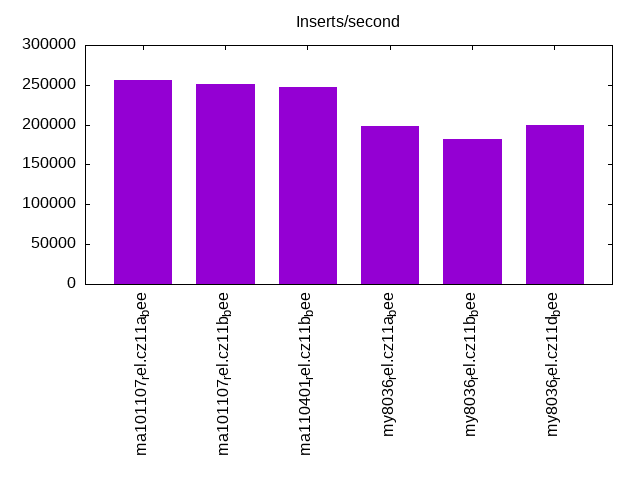
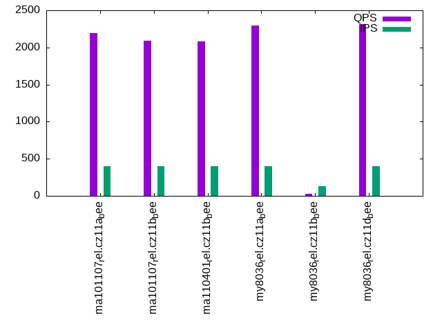

This is a report for the insert benchmark with 800M docs and 4 client(s). It is generated by scripts (bash, awk, sed) and Tufte might not be impressed. An overview of the insert benchmark is here and a short update is here. Below, by DBMS, I mean DBMS+version.config. An example is my8020.c10b40 where my means MySQL, 8020 is version 8.0.20 and c10b40 is the name for the configuration file.
The test server has 8 AMD cores, 16G RAM and an NVMe SSD. It is described here as the Beelink. The benchmark was run with 4 clients and there were 1 or 3 connections per client (1 for queries or inserts without rate limits, 1+1 for rate limited inserts+deletes). It uses 4 tables with a table per client. It loads 800M rows per table without secondary indexes, creates 3 secondary indexes per table, then inserts 2m rows per table with a delete per insert to avoid growing the table. It then does 6 read+write tests for 1800s each that do queries as fast as possible with 100,100,500,500,1000,1000 inserts/s and the same for deletes/s per client concurrent with the queries. The database is larger than memory. Clients and the DBMS share one server. The per-database configs are in the per-database subdirectories here.
The tested DBMS are:
The numbers are inserts/s for l.i0, l.i1 and l.i2, indexed docs (or rows) /s for l.x and queries/s for qr100, qp100 thru qr1000, qp1000" The values are the average rate over the entire test for inserts (IPS) and queries (QPS). The range of values for IPS and QPS is split into 3 parts: bottom 25%, middle 50%, top 25%. Values in the bottom 25% have a red background, values in the top 25% have a green background and values in the middle have no color. A gray background is used for values that can be ignored because the DBMS did not sustain the target insert rate. Red backgrounds are not used when the minimum value is within 80% of the max value.
| dbms | l.i0 | l.x | l.i1 | l.i2 | qr100 | qp100 | qr500 | qp500 | qr1000 | qp1000 |
|---|---|---|---|---|---|---|---|---|---|---|
| ma101107_rel.cz11a_bee | 256410 | 316206 | 2502 | 2689 | 14863 | 2193 | 5644 | 1106 | 2660 | 733 |
| ma101107_rel.cz11b_bee | 251177 | 303030 | 1490 | 2086 | 14856 | 2088 | 5908 | 1144 | 3099 | 661 |
| ma110401_rel.cz11b_bee | 247295 | 303145 | 1425 | 2162 | 14996 | 2082 | 7724 | 1202 | 3504 | 653 |
| my8036_rel.cz11a_bee | 198462 | 312867 | 4594 | 4040 | 16817 | 2294 | 15331 | 1660 | 11338 | 1175 |
| my8036_rel.cz11b_bee | 181653 | 52934 | 55 | 101 | 6626 | 28 | 6498 | 37 | 3038 | 44 |
| my8036_rel.cz11d_bee | 199054 | 310198 | 3610 | 3532 | 16917 | 2314 | 14778 | 1669 | 11877 | 1085 |
This table has relative throughput, throughput for the DBMS relative to the DBMS in the first line, using the absolute throughput from the previous table. Values less than 0.95 have a yellow background. Values greater than 1.05 have a blue background.
| dbms | l.i0 | l.x | l.i1 | l.i2 | qr100 | qp100 | qr500 | qp500 | qr1000 | qp1000 |
|---|---|---|---|---|---|---|---|---|---|---|
| ma101107_rel.cz11a_bee | 1.00 | 1.00 | 1.00 | 1.00 | 1.00 | 1.00 | 1.00 | 1.00 | 1.00 | 1.00 |
| ma101107_rel.cz11b_bee | 0.98 | 0.96 | 0.60 | 0.78 | 1.00 | 0.95 | 1.05 | 1.03 | 1.17 | 0.90 |
| ma110401_rel.cz11b_bee | 0.96 | 0.96 | 0.57 | 0.80 | 1.01 | 0.95 | 1.37 | 1.09 | 1.32 | 0.89 |
| my8036_rel.cz11a_bee | 0.77 | 0.99 | 1.84 | 1.50 | 1.13 | 1.05 | 2.72 | 1.50 | 4.26 | 1.60 |
| my8036_rel.cz11b_bee | 0.71 | 0.17 | 0.02 | 0.04 | 0.45 | 0.01 | 1.15 | 0.03 | 1.14 | 0.06 |
| my8036_rel.cz11d_bee | 0.78 | 0.98 | 1.44 | 1.31 | 1.14 | 1.06 | 2.62 | 1.51 | 4.47 | 1.48 |
This lists the average rate of inserts/s for the tests that do inserts concurrent with queries. For such tests the query rate is listed in the table above. The read+write tests are setup so that the insert rate should match the target rate every second. Cells that are not at least 95% of the target have a red background to indicate a failure to satisfy the target.
| dbms | qr100.L1 | qp100.L2 | qr500.L3 | qp500.L4 | qr1000.L5 | qp1000.L6 |
|---|---|---|---|---|---|---|
| ma101107_rel.cz11a_bee | 399 | 399 | 1994 | 1994 | 2808 | 2940 |
| ma101107_rel.cz11b_bee | 399 | 399 | 1994 | 1994 | 2351 | 2494 |
| ma110401_rel.cz11b_bee | 399 | 399 | 1994 | 1994 | 2399 | 2503 |
| my8036_rel.cz11a_bee | 399 | 399 | 1994 | 1994 | 3989 | 3989 |
| my8036_rel.cz11b_bee | 127 | 134 | 210 | 390 | 550 | 469 |
| my8036_rel.cz11d_bee | 399 | 399 | 1993 | 1994 | 3700 | 3987 |
| target | 400 | 400 | 2000 | 2000 | 4000 | 4000 |
l.i0: load without secondary indexes. Graphs for performance per 1-second interval are here.
Average throughput:
Insert response time histogram: each cell has the percentage of responses that take <= the time in the header and max is the max response time in seconds. For the max column values in the top 25% of the range have a red background and in the bottom 25% of the range have a green background. The red background is not used when the min value is within 80% of the max value.
| dbms | 256us | 1ms | 4ms | 16ms | 64ms | 256ms | 1s | 4s | 16s | gt | max |
|---|---|---|---|---|---|---|---|---|---|---|---|
| ma101107_rel.cz11a_bee | 0.106 | 97.277 | 2.565 | 0.032 | 0.020 | 0.179 | |||||
| ma101107_rel.cz11b_bee | 0.161 | 97.208 | 2.555 | 0.056 | 0.020 | nonzero | 15.355 | ||||
| ma110401_rel.cz11b_bee | 0.051 | 97.411 | 2.445 | 0.070 | 0.023 | nonzero | nonzero | 16.336 | |||
| my8036_rel.cz11a_bee | 99.213 | 0.663 | 0.113 | 0.011 | 0.180 | ||||||
| my8036_rel.cz11b_bee | 99.164 | 0.704 | 0.086 | 0.033 | 0.005 | 0.007 | nonzero | 33.471 | |||
| my8036_rel.cz11d_bee | 99.211 | 0.690 | 0.089 | 0.010 | 0.171 |
Performance metrics for the DBMS listed above. Some are normalized by throughput, others are not. Legend for results is here.
ips qps rps rmbps wps wmbps rpq rkbpq wpi wkbpi csps cpups cspq cpupq dbgb1 dbgb2 rss maxop p50 p99 tag 256410 0 1757 6.9 1275.2 74.8 0.007 0.027 0.005 0.299 36433 78.8 0.142 25 52.6 68.5 10.3 0.179 64630 54241 ma101107_rel.cz11a_bee 251177 0 1719 6.7 1270.9 73.3 0.007 0.027 0.005 0.299 36015 77.2 0.143 25 52.6 68.5 10.3 15.355 64430 49946 ma101107_rel.cz11b_bee 247295 0 1680 6.6 1259.5 72.2 0.007 0.027 0.005 0.299 35910 76.5 0.145 25 52.6 68.5 10.3 16.336 63865 0 ma110401_rel.cz11b_bee 198462 0 1 0.0 1199.5 75.0 0.000 0.000 0.006 0.387 23629 74.0 0.119 30 52.5 68.1 11.1 0.180 50144 43453 my8036_rel.cz11a_bee 181653 0 1 0.0 1302.9 66.0 0.000 0.000 0.007 0.372 21415 70.0 0.118 31 52.5 68.0 11.2 33.471 49464 0 my8036_rel.cz11b_bee 199054 0 1 0.0 1203.8 75.2 0.000 0.000 0.006 0.387 23871 74.5 0.120 30 52.5 68.1 11.1 0.171 50245 43352 my8036_rel.cz11d_bee
l.x: create secondary indexes.
Average throughput:
Performance metrics for the DBMS listed above. Some are normalized by throughput, others are not. Legend for results is here.
ips qps rps rmbps wps wmbps rpq rkbpq wpi wkbpi csps cpups cspq cpupq dbgb1 dbgb2 rss maxop p50 p99 tag 316206 0 2056 281.3 2193.8 314.4 0.007 0.911 0.007 1.018 12215 41.0 0.039 10 119.9 135.8 10.4 0.003 NA NA ma101107_rel.cz11a_bee 303030 0 2038 271.0 2128.4 302.0 0.007 0.916 0.007 1.021 12659 40.3 0.042 11 119.9 135.8 10.4 0.003 NA NA ma101107_rel.cz11b_bee 303145 0 2049 270.7 2045.4 300.4 0.007 0.914 0.007 1.015 12256 40.5 0.040 11 119.9 135.8 10.4 0.004 NA NA ma110401_rel.cz11b_bee 312867 0 4946 458.9 6281.3 408.6 0.016 1.502 0.020 1.337 18931 90.2 0.061 23 120.7 136.3 11.2 0.008 NA NA my8036_rel.cz11a_bee 52934 0 836 77.5 1316.7 70.1 0.016 1.499 0.025 1.357 7135 24.5 0.135 37 120.7 136.3 11.2 0.009 NA NA my8036_rel.cz11b_bee 310198 0 4908 455.3 6272.0 405.4 0.016 1.503 0.020 1.338 18721 90.4 0.060 23 120.7 136.3 11.2 0.009 NA NA my8036_rel.cz11d_bee
l.i1: continue load after secondary indexes created with 50 inserts per transaction. Graphs for performance per 1-second interval are here.
Average throughput:
Insert response time histogram: each cell has the percentage of responses that take <= the time in the header and max is the max response time in seconds. For the max column values in the top 25% of the range have a red background and in the bottom 25% of the range have a green background. The red background is not used when the min value is within 80% of the max value.
| dbms | 256us | 1ms | 4ms | 16ms | 64ms | 256ms | 1s | 4s | 16s | gt | max |
|---|---|---|---|---|---|---|---|---|---|---|---|
| ma101107_rel.cz11a_bee | 44.888 | 55.041 | 0.070 | 0.002 | 1.386 | ||||||
| ma101107_rel.cz11b_bee | 9.853 | 87.127 | 2.670 | 0.277 | 0.073 | 9.085 | |||||
| ma110401_rel.cz11b_bee | 0.001 | 12.065 | 85.398 | 1.952 | 0.449 | 0.127 | 0.009 | 89.476 | |||
| my8036_rel.cz11a_bee | 7.341 | 74.794 | 17.855 | 0.010 | 0.345 | ||||||
| my8036_rel.cz11b_bee | 0.636 | 0.127 | 0.268 | 63.499 | 35.470 | 10.888 | |||||
| my8036_rel.cz11d_bee | 0.010 | 65.422 | 34.562 | 0.005 | 0.464 |
Delete response time histogram: each cell has the percentage of responses that take <= the time in the header and max is the max response time in seconds. For the max column values in the top 25% of the range have a red background and in the bottom 25% of the range have a green background. The red background is not used when the min value is within 80% of the max value.
| dbms | 256us | 1ms | 4ms | 16ms | 64ms | 256ms | 1s | 4s | 16s | gt | max |
|---|---|---|---|---|---|---|---|---|---|---|---|
| ma101107_rel.cz11a_bee | 2.588 | 58.441 | 38.951 | 0.019 | 0.002 | 1.287 | |||||
| ma101107_rel.cz11b_bee | 0.135 | 24.873 | 73.934 | 0.848 | 0.210 | 3.809 | |||||
| ma110401_rel.cz11b_bee | 0.179 | 30.652 | 67.982 | 0.843 | 0.262 | 0.076 | 0.006 | 69.143 | |||
| my8036_rel.cz11a_bee | 53.660 | 42.938 | 2.958 | 0.444 | 0.164 | ||||||
| my8036_rel.cz11b_bee | 20.566 | 1.733 | 16.733 | 36.210 | 24.486 | 0.273 | 2.319 | ||||
| my8036_rel.cz11d_bee | 24.547 | 67.059 | 8.393 | 0.001 | 0.330 |
Performance metrics for the DBMS listed above. Some are normalized by throughput, others are not. Legend for results is here.
ips qps rps rmbps wps wmbps rpq rkbpq wpi wkbpi csps cpups cspq cpupq dbgb1 dbgb2 rss maxop p50 p99 tag 2502 0 15562 241.3 14252.9 421.9 6.220 98.762 5.697 172.667 134681 24.7 53.832 790 144.5 160.3 10.1 1.386 649 400 ma101107_rel.cz11a_bee 1490 0 9220 143.0 8326.5 238.7 6.187 98.281 5.588 164.010 87527 15.8 58.739 848 144.5 160.3 10.1 9.085 350 0 ma101107_rel.cz11b_bee 1425 0 8914 138.3 8103.4 232.3 6.256 99.386 5.688 166.962 83563 15.1 58.653 848 144.5 160.3 10.1 89.476 350 0 ma110401_rel.cz11b_bee 4594 0 18874 294.9 28283.7 776.1 4.108 65.727 6.156 172.972 111639 53.0 24.299 923 153.7 170.0 10.8 0.345 1099 599 my8036_rel.cz11a_bee 55 0 282 4.4 768.5 11.1 5.159 82.537 14.074 209.049 11729 3.1 214.825 4542 151.3 167.3 10.7 10.888 0 0 my8036_rel.cz11b_bee 3610 0 22080 345.0 31203.9 840.9 6.117 97.870 8.644 238.544 134369 48.8 37.224 1082 144.0 159.6 10.7 0.464 944 599 my8036_rel.cz11d_bee
l.i2: continue load after secondary indexes created with 5 inserts per transaction. Graphs for performance per 1-second interval are here.
Average throughput:
Insert response time histogram: each cell has the percentage of responses that take <= the time in the header and max is the max response time in seconds. For the max column values in the top 25% of the range have a red background and in the bottom 25% of the range have a green background. The red background is not used when the min value is within 80% of the max value.
| dbms | 256us | 1ms | 4ms | 16ms | 64ms | 256ms | 1s | 4s | 16s | gt | max |
|---|---|---|---|---|---|---|---|---|---|---|---|
| ma101107_rel.cz11a_bee | nonzero | 69.375 | 25.656 | 1.358 | 3.610 | 0.132 | |||||
| ma101107_rel.cz11b_bee | 21.428 | 64.342 | 13.427 | 0.693 | 0.108 | 0.002 | 1.281 | ||||
| ma110401_rel.cz11b_bee | 19.977 | 66.280 | 12.893 | 0.832 | 0.018 | 0.961 | |||||
| my8036_rel.cz11a_bee | 1.999 | 65.667 | 29.521 | 2.192 | 0.622 | 0.210 | |||||
| my8036_rel.cz11b_bee | 2.649 | 3.429 | 1.112 | 11.481 | 52.513 | 28.803 | 0.011 | 1.272 | |||
| my8036_rel.cz11d_bee | 61.135 | 35.541 | 2.882 | 0.443 | 0.119 |
Delete response time histogram: each cell has the percentage of responses that take <= the time in the header and max is the max response time in seconds. For the max column values in the top 25% of the range have a red background and in the bottom 25% of the range have a green background. The red background is not used when the min value is within 80% of the max value.
| dbms | 256us | 1ms | 4ms | 16ms | 64ms | 256ms | 1s | 4s | 16s | gt | max |
|---|---|---|---|---|---|---|---|---|---|---|---|
| ma101107_rel.cz11a_bee | 0.006 | 75.755 | 20.374 | 0.539 | 3.326 | 0.127 | |||||
| ma101107_rel.cz11b_bee | 0.002 | 34.326 | 54.540 | 10.421 | 0.656 | 0.056 | 0.779 | ||||
| ma110401_rel.cz11b_bee | nonzero | 32.169 | 57.108 | 9.961 | 0.755 | 0.007 | 0.788 | ||||
| my8036_rel.cz11a_bee | 18.626 | 74.337 | 6.059 | 0.529 | 0.449 | 0.207 | |||||
| my8036_rel.cz11b_bee | 23.380 | 36.482 | 4.364 | 21.924 | 13.675 | 0.153 | 0.022 | 1.915 | |||
| my8036_rel.cz11d_bee | 0.001 | 71.793 | 26.085 | 1.764 | 0.357 | 0.145 |
Performance metrics for the DBMS listed above. Some are normalized by throughput, others are not. Legend for results is here.
ips qps rps rmbps wps wmbps rpq rkbpq wpi wkbpi csps cpups cspq cpupq dbgb1 dbgb2 rss maxop p50 p99 tag 2689 0 15918 238.9 13076.0 394.0 5.920 90.965 4.863 150.021 133310 31.1 49.576 925 144.5 160.3 10.1 0.132 679 594 ma101107_rel.cz11a_bee 2086 0 12258 183.9 9860.4 286.3 5.876 90.264 4.727 140.528 109286 25.0 52.390 959 144.5 160.3 10.1 1.281 544 10 ma101107_rel.cz11b_bee 2162 0 12869 193.2 10338.0 301.0 5.952 91.480 4.781 142.565 110399 25.3 51.061 936 144.5 160.3 10.1 0.961 549 30 ma110401_rel.cz11b_bee 4040 0 15058 235.3 22662.7 600.1 3.727 59.629 5.609 152.095 97580 63.3 24.151 1253 153.7 170.2 10.8 0.210 1009 614 my8036_rel.cz11a_bee 101 0 295 4.6 799.6 11.6 2.930 46.880 7.933 117.581 6204 5.7 61.549 4524 154.1 170.2 10.8 1.272 25 10 my8036_rel.cz11b_bee 3532 0 19754 308.7 27187.5 710.6 5.593 89.487 7.697 206.013 121212 52.0 34.318 1178 144.0 159.6 10.7 0.119 904 655 my8036_rel.cz11d_bee
qr100.L1: range queries with 100 insert/s per client. Graphs for performance per 1-second interval are here.
Average throughput:
Query response time histogram: each cell has the percentage of responses that take <= the time in the header and max is the max response time in seconds. For max values in the top 25% of the range have a red background and in the bottom 25% of the range have a green background. The red background is not used when the min value is within 80% of the max value.
| dbms | 256us | 1ms | 4ms | 16ms | 64ms | 256ms | 1s | 4s | 16s | gt | max |
|---|---|---|---|---|---|---|---|---|---|---|---|
| ma101107_rel.cz11a_bee | 62.685 | 36.995 | 0.285 | 0.028 | 0.007 | 0.047 | |||||
| ma101107_rel.cz11b_bee | 62.511 | 37.177 | 0.273 | 0.033 | 0.006 | 0.054 | |||||
| ma110401_rel.cz11b_bee | 64.950 | 34.737 | 0.269 | 0.032 | 0.012 | 0.050 | |||||
| my8036_rel.cz11a_bee | 76.133 | 23.738 | 0.125 | 0.004 | nonzero | 0.034 | |||||
| my8036_rel.cz11b_bee | 38.357 | 57.869 | 3.103 | 0.226 | 0.382 | 0.057 | 0.007 | nonzero | 1.364 | ||
| my8036_rel.cz11d_bee | 75.114 | 24.838 | 0.043 | 0.005 | nonzero | 0.028 |
Insert response time histogram: each cell has the percentage of responses that take <= the time in the header and max is the max response time in seconds. For max values in the top 25% of the range have a red background and in the bottom 25% of the range have a green background. The red background is not used when the min value is within 80% of the max value.
| dbms | 256us | 1ms | 4ms | 16ms | 64ms | 256ms | 1s | 4s | 16s | gt | max |
|---|---|---|---|---|---|---|---|---|---|---|---|
| ma101107_rel.cz11a_bee | 1.882 | 92.069 | 6.049 | 0.100 | |||||||
| ma101107_rel.cz11b_bee | 1.750 | 90.250 | 8.000 | 0.095 | |||||||
| ma110401_rel.cz11b_bee | 2.528 | 91.500 | 5.972 | 0.103 | |||||||
| my8036_rel.cz11a_bee | 0.438 | 96.458 | 3.104 | 0.185 | |||||||
| my8036_rel.cz11b_bee | 12.403 | 87.583 | 0.014 | 4.280 | |||||||
| my8036_rel.cz11d_bee | 0.104 | 99.090 | 0.806 | 0.153 |
Delete response time histogram: each cell has the percentage of responses that take <= the time in the header and max is the max response time in seconds. For max values in the top 25% of the range have a red background and in the bottom 25% of the range have a green background. The red background is not used when the min value is within 80% of the max value.
| dbms | 256us | 1ms | 4ms | 16ms | 64ms | 256ms | 1s | 4s | 16s | gt | max |
|---|---|---|---|---|---|---|---|---|---|---|---|
| ma101107_rel.cz11a_bee | 37.271 | 61.243 | 1.486 | 0.089 | |||||||
| ma101107_rel.cz11b_bee | 34.931 | 63.056 | 2.014 | 0.084 | |||||||
| ma110401_rel.cz11b_bee | 38.222 | 60.222 | 1.556 | 0.086 | |||||||
| my8036_rel.cz11a_bee | 90.014 | 9.229 | 0.556 | 0.201 | 0.110 | ||||||
| my8036_rel.cz11b_bee | 12.028 | 1.292 | 13.896 | 46.299 | 26.472 | 0.014 | 1.089 | ||||
| my8036_rel.cz11d_bee | 46.799 | 52.743 | 0.458 | 0.130 |
Performance metrics for the DBMS listed above. Some are normalized by throughput, others are not. Legend for results is here.
ips qps rps rmbps wps wmbps rpq rkbpq wpi wkbpi csps cpups cspq cpupq dbgb1 dbgb2 rss maxop p50 p99 tag 399 14863 2538 39.4 1920.9 57.9 0.171 2.717 4.817 148.600 71856 51.3 4.835 276 144.5 160.3 10.1 0.047 3756 2094 ma101107_rel.cz11a_bee 399 14856 2539 39.5 2007.2 57.9 0.171 2.720 5.033 148.594 72166 51.2 4.858 276 144.5 160.3 10.1 0.054 3740 2030 ma101107_rel.cz11b_bee 399 14996 2534 39.4 1989.8 57.6 0.169 2.689 4.992 147.863 72772 50.9 4.853 272 144.5 160.3 10.1 0.050 3788 2126 ma110401_rel.cz11b_bee 399 16817 3403 53.2 4924.2 127.9 0.202 3.237 12.348 328.352 78626 56.3 4.676 268 153.7 170.2 10.8 0.034 4251 3181 my8036_rel.cz11a_bee 127 6626 330 5.1 852.5 12.2 0.050 0.795 6.702 98.153 31910 36.3 4.815 438 155.2 171.4 10.8 1.364 1759 48 my8036_rel.cz11b_bee 399 16917 2215 34.6 2881.9 75.2 0.131 2.095 7.226 192.991 74228 53.6 4.388 253 144.0 159.6 10.8 0.028 4237 3516 my8036_rel.cz11d_bee
qp100.L2: point queries with 100 insert/s per client. Graphs for performance per 1-second interval are here.
Average throughput:
Query response time histogram: each cell has the percentage of responses that take <= the time in the header and max is the max response time in seconds. For max values in the top 25% of the range have a red background and in the bottom 25% of the range have a green background. The red background is not used when the min value is within 80% of the max value.
| dbms | 256us | 1ms | 4ms | 16ms | 64ms | 256ms | 1s | 4s | 16s | gt | max |
|---|---|---|---|---|---|---|---|---|---|---|---|
| ma101107_rel.cz11a_bee | 0.519 | 96.872 | 2.328 | 0.280 | 0.050 | ||||||
| ma101107_rel.cz11b_bee | 0.488 | 96.300 | 2.661 | 0.550 | nonzero | 0.215 | |||||
| ma110401_rel.cz11b_bee | 0.437 | 96.316 | 2.919 | 0.328 | 0.054 | ||||||
| my8036_rel.cz11a_bee | 0.187 | 98.150 | 1.652 | 0.011 | 0.053 | ||||||
| my8036_rel.cz11b_bee | 0.886 | 0.788 | 12.912 | 76.021 | 9.393 | 0.712 | |||||
| my8036_rel.cz11d_bee | 0.190 | 98.366 | 1.431 | 0.014 | 0.052 |
Insert response time histogram: each cell has the percentage of responses that take <= the time in the header and max is the max response time in seconds. For max values in the top 25% of the range have a red background and in the bottom 25% of the range have a green background. The red background is not used when the min value is within 80% of the max value.
| dbms | 256us | 1ms | 4ms | 16ms | 64ms | 256ms | 1s | 4s | 16s | gt | max |
|---|---|---|---|---|---|---|---|---|---|---|---|
| ma101107_rel.cz11a_bee | 0.069 | 99.806 | 0.125 | 0.092 | |||||||
| ma101107_rel.cz11b_bee | 0.118 | 99.771 | 0.111 | 0.096 | |||||||
| ma110401_rel.cz11b_bee | 0.111 | 99.819 | 0.069 | 0.102 | |||||||
| my8036_rel.cz11a_bee | 6.438 | 93.458 | 0.104 | 0.122 | |||||||
| my8036_rel.cz11b_bee | 0.007 | 0.049 | 15.931 | 83.965 | 0.049 | 4.346 | |||||
| my8036_rel.cz11d_bee | 0.069 | 99.812 | 0.118 | 0.139 |
Delete response time histogram: each cell has the percentage of responses that take <= the time in the header and max is the max response time in seconds. For max values in the top 25% of the range have a red background and in the bottom 25% of the range have a green background. The red background is not used when the min value is within 80% of the max value.
| dbms | 256us | 1ms | 4ms | 16ms | 64ms | 256ms | 1s | 4s | 16s | gt | max |
|---|---|---|---|---|---|---|---|---|---|---|---|
| ma101107_rel.cz11a_bee | 12.993 | 86.972 | 0.035 | 0.071 | |||||||
| ma101107_rel.cz11b_bee | 15.563 | 84.403 | 0.035 | 0.084 | |||||||
| ma110401_rel.cz11b_bee | 17.799 | 82.188 | 0.014 | 0.091 | |||||||
| my8036_rel.cz11a_bee | 85.812 | 14.069 | 0.090 | 0.028 | 0.111 | ||||||
| my8036_rel.cz11b_bee | 5.910 | 9.361 | 12.556 | 27.417 | 43.493 | 1.264 | 1.956 | ||||
| my8036_rel.cz11d_bee | 22.611 | 77.347 | 0.042 | 0.121 |
Performance metrics for the DBMS listed above. Some are normalized by throughput, others are not. Legend for results is here.
ips qps rps rmbps wps wmbps rpq rkbpq wpi wkbpi csps cpups cspq cpupq dbgb1 dbgb2 rss maxop p50 p99 tag 399 2193 21306 332.7 2221.8 66.6 9.715 155.342 5.571 170.971 65904 17.9 30.052 653 144.5 160.3 10.1 0.050 544 495 ma101107_rel.cz11a_bee 399 2088 20431 319.0 2329.7 66.8 9.788 156.491 5.842 171.625 63946 17.5 30.633 671 144.5 160.3 10.1 0.215 527 463 ma101107_rel.cz11b_bee 399 2082 20345 317.7 2270.9 65.3 9.771 156.217 5.694 167.628 63395 17.2 30.445 661 144.5 160.3 10.1 0.054 527 463 ma110401_rel.cz11b_bee 399 2294 22307 348.5 3984.4 103.4 9.724 155.582 9.991 265.399 63119 23.1 27.515 806 153.7 170.2 10.8 0.053 575 543 my8036_rel.cz11a_bee 134 28 582 9.1 878.8 12.8 21.183 338.921 6.544 97.507 7016 5.8 255.144 16873 156.5 172.9 10.8 0.712 0 0 my8036_rel.cz11b_bee 399 2314 22326 348.8 3722.4 95.8 9.650 154.400 9.334 245.909 62831 22.0 27.157 761 144.0 159.6 10.8 0.052 576 543 my8036_rel.cz11d_bee
qr500.L3: range queries with 500 insert/s per client. Graphs for performance per 1-second interval are here.
Average throughput:
Query response time histogram: each cell has the percentage of responses that take <= the time in the header and max is the max response time in seconds. For max values in the top 25% of the range have a red background and in the bottom 25% of the range have a green background. The red background is not used when the min value is within 80% of the max value.
| dbms | 256us | 1ms | 4ms | 16ms | 64ms | 256ms | 1s | 4s | 16s | gt | max |
|---|---|---|---|---|---|---|---|---|---|---|---|
| ma101107_rel.cz11a_bee | 37.070 | 51.781 | 9.595 | 1.160 | 0.393 | 0.001 | 0.087 | ||||
| ma101107_rel.cz11b_bee | 38.269 | 49.841 | 10.125 | 1.532 | 0.223 | 0.008 | 0.001 | 0.514 | |||
| ma110401_rel.cz11b_bee | 47.105 | 44.564 | 7.392 | 0.832 | 0.104 | 0.002 | nonzero | 0.567 | |||
| my8036_rel.cz11a_bee | 69.920 | 29.769 | 0.292 | 0.018 | nonzero | 0.045 | |||||
| my8036_rel.cz11b_bee | 37.780 | 58.253 | 3.320 | 0.259 | 0.328 | 0.057 | 0.005 | 0.648 | |||
| my8036_rel.cz11d_bee | 66.799 | 32.620 | 0.534 | 0.046 | 0.001 | 0.042 |
Insert response time histogram: each cell has the percentage of responses that take <= the time in the header and max is the max response time in seconds. For max values in the top 25% of the range have a red background and in the bottom 25% of the range have a green background. The red background is not used when the min value is within 80% of the max value.
| dbms | 256us | 1ms | 4ms | 16ms | 64ms | 256ms | 1s | 4s | 16s | gt | max |
|---|---|---|---|---|---|---|---|---|---|---|---|
| ma101107_rel.cz11a_bee | 0.015 | 55.196 | 44.788 | 0.001 | 0.257 | ||||||
| ma101107_rel.cz11b_bee | 0.011 | 69.158 | 29.847 | 0.983 | 0.611 | ||||||
| ma110401_rel.cz11b_bee | 0.022 | 80.022 | 19.656 | 0.300 | 0.651 | ||||||
| my8036_rel.cz11a_bee | 6.663 | 89.565 | 3.772 | 0.233 | |||||||
| my8036_rel.cz11b_bee | 0.001 | 0.004 | 0.032 | 1.746 | 58.232 | 39.985 | 3.263 | ||||
| my8036_rel.cz11d_bee | 3.667 | 90.169 | 6.164 | 0.198 |
Delete response time histogram: each cell has the percentage of responses that take <= the time in the header and max is the max response time in seconds. For max values in the top 25% of the range have a red background and in the bottom 25% of the range have a green background. The red background is not used when the min value is within 80% of the max value.
| dbms | 256us | 1ms | 4ms | 16ms | 64ms | 256ms | 1s | 4s | 16s | gt | max |
|---|---|---|---|---|---|---|---|---|---|---|---|
| ma101107_rel.cz11a_bee | 3.321 | 63.836 | 32.843 | 0.226 | |||||||
| ma101107_rel.cz11b_bee | 0.850 | 81.642 | 16.910 | 0.599 | 0.580 | ||||||
| ma110401_rel.cz11b_bee | 1.256 | 88.981 | 9.536 | 0.228 | 0.531 | ||||||
| my8036_rel.cz11a_bee | 68.396 | 29.039 | 1.638 | 0.928 | 0.134 | ||||||
| my8036_rel.cz11b_bee | 13.732 | 3.343 | 15.228 | 46.565 | 21.126 | 0.006 | 1.334 | ||||
| my8036_rel.cz11d_bee | 29.750 | 67.536 | 2.714 | 0.178 |
Performance metrics for the DBMS listed above. Some are normalized by throughput, others are not. Legend for results is here.
ips qps rps rmbps wps wmbps rpq rkbpq wpi wkbpi csps cpups cspq cpupq dbgb1 dbgb2 rss maxop p50 p99 tag 1994 5644 15767 245.2 9449.5 284.2 2.793 44.488 4.738 145.928 114781 38.5 20.335 546 144.5 160.3 10.1 0.087 1422 1039 ma101107_rel.cz11a_bee 1994 5908 15233 236.9 9831.4 284.5 2.578 41.059 4.930 146.056 118435 38.4 20.046 520 144.5 160.3 10.1 0.514 1598 576 ma101107_rel.cz11b_bee 1994 7724 14589 226.8 9866.2 286.4 1.889 30.075 4.947 147.048 120812 42.5 15.642 440 144.5 160.3 10.1 0.567 1983 815 ma110401_rel.cz11b_bee 1994 15331 10925 170.7 14939.5 389.7 0.713 11.402 7.491 200.074 100169 71.7 6.534 374 153.7 170.2 10.8 0.045 3837 3324 my8036_rel.cz11a_bee 210 6498 309 4.8 848.4 12.4 0.048 0.761 4.032 60.479 30847 38.5 4.747 474 161.8 179.2 10.8 0.648 1694 368 my8036_rel.cz11b_bee 1993 14778 10805 168.8 14768.5 381.6 0.731 11.698 7.409 196.025 106188 67.1 7.185 363 144.0 159.6 10.8 0.042 3694 3117 my8036_rel.cz11d_bee
qp500.L4: point queries with 500 insert/s per client. Graphs for performance per 1-second interval are here.
Average throughput:
Query response time histogram: each cell has the percentage of responses that take <= the time in the header and max is the max response time in seconds. For max values in the top 25% of the range have a red background and in the bottom 25% of the range have a green background. The red background is not used when the min value is within 80% of the max value.
| dbms | 256us | 1ms | 4ms | 16ms | 64ms | 256ms | 1s | 4s | 16s | gt | max |
|---|---|---|---|---|---|---|---|---|---|---|---|
| ma101107_rel.cz11a_bee | 0.010 | 86.282 | 10.918 | 2.788 | 0.002 | 0.090 | |||||
| ma101107_rel.cz11b_bee | 0.004 | 78.869 | 20.047 | 1.060 | 0.016 | 0.004 | 0.507 | ||||
| ma110401_rel.cz11b_bee | 0.006 | 79.246 | 19.897 | 0.843 | 0.007 | 0.002 | 0.526 | ||||
| my8036_rel.cz11a_bee | 0.006 | 90.075 | 9.829 | 0.090 | nonzero | 0.078 | |||||
| my8036_rel.cz11b_bee | 2.985 | 2.219 | 27.114 | 64.648 | 3.034 | 0.845 | |||||
| my8036_rel.cz11d_bee | 0.006 | 90.934 | 8.875 | 0.186 | nonzero | 0.073 |
Insert response time histogram: each cell has the percentage of responses that take <= the time in the header and max is the max response time in seconds. For max values in the top 25% of the range have a red background and in the bottom 25% of the range have a green background. The red background is not used when the min value is within 80% of the max value.
| dbms | 256us | 1ms | 4ms | 16ms | 64ms | 256ms | 1s | 4s | 16s | gt | max |
|---|---|---|---|---|---|---|---|---|---|---|---|
| ma101107_rel.cz11a_bee | 0.004 | 49.246 | 50.750 | 0.223 | |||||||
| ma101107_rel.cz11b_bee | 76.075 | 23.721 | 0.204 | 0.601 | |||||||
| ma110401_rel.cz11b_bee | 0.001 | 84.701 | 15.174 | 0.124 | 0.583 | ||||||
| my8036_rel.cz11a_bee | 7.639 | 90.569 | 1.792 | 0.171 | |||||||
| my8036_rel.cz11b_bee | 0.018 | 2.457 | 3.772 | 23.106 | 61.479 | 9.167 | 0.001 | 4.040 | |||
| my8036_rel.cz11d_bee | 0.340 | 90.818 | 8.842 | 0.180 |
Delete response time histogram: each cell has the percentage of responses that take <= the time in the header and max is the max response time in seconds. For max values in the top 25% of the range have a red background and in the bottom 25% of the range have a green background. The red background is not used when the min value is within 80% of the max value.
| dbms | 256us | 1ms | 4ms | 16ms | 64ms | 256ms | 1s | 4s | 16s | gt | max |
|---|---|---|---|---|---|---|---|---|---|---|---|
| ma101107_rel.cz11a_bee | 0.700 | 61.590 | 37.710 | 0.167 | |||||||
| ma101107_rel.cz11b_bee | 0.189 | 82.837 | 16.808 | 0.165 | 0.567 | ||||||
| ma110401_rel.cz11b_bee | 0.126 | 90.749 | 9.026 | 0.099 | 0.573 | ||||||
| my8036_rel.cz11a_bee | 73.218 | 25.918 | 0.379 | 0.485 | 0.115 | ||||||
| my8036_rel.cz11b_bee | 0.342 | 23.468 | 16.137 | 34.400 | 24.049 | 1.603 | 0.001 | 4.046 | |||
| my8036_rel.cz11d_bee | 5.844 | 91.010 | 3.146 | 0.174 |
Performance metrics for the DBMS listed above. Some are normalized by throughput, others are not. Legend for results is here.
ips qps rps rmbps wps wmbps rpq rkbpq wpi wkbpi csps cpups cspq cpupq dbgb1 dbgb2 rss maxop p50 p99 tag 1994 1106 22059 343.6 9336.8 280.7 19.952 318.207 4.682 144.111 114273 25.5 103.359 1845 144.5 160.3 10.1 0.090 272 224 ma101107_rel.cz11a_bee 1994 1144 22383 348.7 9627.8 278.3 19.566 312.083 4.827 142.915 117493 23.5 102.704 1643 144.5 160.3 10.1 0.507 288 160 ma101107_rel.cz11b_bee 1994 1202 22938 357.3 9718.9 282.0 19.075 304.301 4.873 144.783 118159 23.3 98.261 1550 144.5 160.3 10.1 0.526 304 208 ma110401_rel.cz11b_bee 1994 1660 26881 420.0 15491.0 399.8 16.192 259.064 7.767 205.274 98233 38.7 59.169 1865 153.7 170.2 10.8 0.078 416 368 my8036_rel.cz11a_bee 390 37 651 10.2 861.0 13.0 17.594 281.501 2.207 34.239 12725 5.9 343.912 12757 164.7 183.8 10.8 0.845 16 0 my8036_rel.cz11b_bee 1994 1669 27032 422.4 15461.4 397.8 16.200 259.193 7.752 204.226 98827 36.3 59.224 1740 144.0 159.6 10.8 0.073 416 384 my8036_rel.cz11d_bee
qr1000.L5: range queries with 1000 insert/s per client. Graphs for performance per 1-second interval are here.
Average throughput:
Query response time histogram: each cell has the percentage of responses that take <= the time in the header and max is the max response time in seconds. For max values in the top 25% of the range have a red background and in the bottom 25% of the range have a green background. The red background is not used when the min value is within 80% of the max value.
| dbms | 256us | 1ms | 4ms | 16ms | 64ms | 256ms | 1s | 4s | 16s | gt | max |
|---|---|---|---|---|---|---|---|---|---|---|---|
| ma101107_rel.cz11a_bee | 13.400 | 61.690 | 19.955 | 3.963 | 0.949 | 0.042 | 0.099 | ||||
| ma101107_rel.cz11b_bee | 21.654 | 55.800 | 16.090 | 5.766 | 0.642 | 0.044 | 0.004 | nonzero | 2.747 | ||
| ma110401_rel.cz11b_bee | 21.812 | 58.677 | 14.260 | 4.717 | 0.493 | 0.039 | 0.002 | nonzero | 2.120 | ||
| my8036_rel.cz11a_bee | 48.035 | 49.091 | 2.713 | 0.156 | 0.005 | nonzero | 0.101 | ||||
| my8036_rel.cz11b_bee | 28.284 | 55.960 | 14.317 | 0.627 | 0.489 | 0.281 | 0.043 | nonzero | 3.681 | ||
| my8036_rel.cz11d_bee | 46.308 | 52.085 | 1.572 | 0.030 | 0.005 | 0.053 |
Insert response time histogram: each cell has the percentage of responses that take <= the time in the header and max is the max response time in seconds. For max values in the top 25% of the range have a red background and in the bottom 25% of the range have a green background. The red background is not used when the min value is within 80% of the max value.
| dbms | 256us | 1ms | 4ms | 16ms | 64ms | 256ms | 1s | 4s | 16s | gt | max |
|---|---|---|---|---|---|---|---|---|---|---|---|
| ma101107_rel.cz11a_bee | 0.012 | 45.811 | 54.177 | 0.246 | |||||||
| ma101107_rel.cz11b_bee | 0.008 | 24.366 | 75.551 | 0.052 | 0.002 | 0.020 | 11.301 | ||||
| ma110401_rel.cz11b_bee | 0.017 | 22.476 | 77.443 | 0.035 | 0.018 | 0.012 | 13.287 | ||||
| my8036_rel.cz11a_bee | 4.340 | 88.696 | 6.965 | 0.242 | |||||||
| my8036_rel.cz11b_bee | 0.472 | 6.148 | 7.848 | 33.906 | 46.297 | 5.322 | 0.009 | 5.600 | |||
| my8036_rel.cz11d_bee | 0.012 | 72.845 | 27.143 | 0.214 |
Delete response time histogram: each cell has the percentage of responses that take <= the time in the header and max is the max response time in seconds. For max values in the top 25% of the range have a red background and in the bottom 25% of the range have a green background. The red background is not used when the min value is within 80% of the max value.
| dbms | 256us | 1ms | 4ms | 16ms | 64ms | 256ms | 1s | 4s | 16s | gt | max |
|---|---|---|---|---|---|---|---|---|---|---|---|
| ma101107_rel.cz11a_bee | 1.751 | 53.507 | 44.742 | 0.229 | |||||||
| ma101107_rel.cz11b_bee | 0.043 | 47.851 | 52.051 | 0.035 | 0.003 | 0.017 | 10.270 | ||||
| ma110401_rel.cz11b_bee | 0.043 | 50.208 | 49.703 | 0.017 | 0.019 | 0.009 | 11.336 | ||||
| my8036_rel.cz11a_bee | 39.001 | 50.431 | 9.679 | 0.889 | 0.144 | ||||||
| my8036_rel.cz11b_bee | 3.174 | 14.128 | 13.775 | 35.203 | 30.246 | 3.469 | 0.005 | 6.922 | |||
| my8036_rel.cz11d_bee | 5.112 | 88.717 | 6.171 | 0.199 |
Performance metrics for the DBMS listed above. Some are normalized by throughput, others are not. Legend for results is here.
ips qps rps rmbps wps wmbps rpq rkbpq wpi wkbpi csps cpups cspq cpupq dbgb1 dbgb2 rss maxop p50 p99 tag 2808 2660 19522 303.4 12444.7 374.3 7.340 116.813 4.432 136.503 134903 35.6 50.719 1071 144.5 160.3 10.1 0.099 671 575 ma101107_rel.cz11a_bee 2351 3099 16347 254.1 10534.5 305.1 5.274 83.966 4.482 132.912 122571 32.5 39.548 839 144.5 160.3 10.1 2.747 784 16 ma101107_rel.cz11b_bee 2399 3504 15703 244.0 10831.1 314.9 4.482 71.321 4.514 134.399 121572 34.1 34.697 779 144.5 160.3 10.1 2.120 895 32 ma110401_rel.cz11b_bee 3989 11338 15280 238.8 21845.1 565.3 1.348 21.562 5.476 145.126 99647 83.4 8.788 588 153.7 170.2 10.8 0.101 2845 2206 my8036_rel.cz11a_bee 550 3038 290 4.5 826.9 12.7 0.095 1.526 1.503 23.654 20288 28.1 6.677 740 166.7 187.6 10.8 3.681 671 48 my8036_rel.cz11b_bee 3700 11877 19356 302.4 26445.6 674.4 1.630 26.075 7.148 186.658 123513 83.9 10.399 565 144.0 159.6 10.8 0.053 2989 2206 my8036_rel.cz11d_bee
qp1000.L6: point queries with 1000 insert/s per client. Graphs for performance per 1-second interval are here.
Average throughput:
Query response time histogram: each cell has the percentage of responses that take <= the time in the header and max is the max response time in seconds. For max values in the top 25% of the range have a red background and in the bottom 25% of the range have a green background. The red background is not used when the min value is within 80% of the max value.
| dbms | 256us | 1ms | 4ms | 16ms | 64ms | 256ms | 1s | 4s | 16s | gt | max |
|---|---|---|---|---|---|---|---|---|---|---|---|
| ma101107_rel.cz11a_bee | 74.208 | 21.697 | 3.918 | 0.177 | 0.115 | ||||||
| ma101107_rel.cz11b_bee | 46.964 | 49.054 | 3.623 | 0.332 | 0.026 | 0.001 | 1.404 | ||||
| ma110401_rel.cz11b_bee | nonzero | 42.829 | 53.425 | 3.469 | 0.265 | 0.012 | nonzero | 1.399 | |||
| my8036_rel.cz11a_bee | nonzero | 75.266 | 24.541 | 0.192 | nonzero | 0.071 | |||||
| my8036_rel.cz11b_bee | nonzero | 5.572 | 3.245 | 33.197 | 56.530 | 1.454 | 0.911 | ||||
| my8036_rel.cz11d_bee | nonzero | 71.472 | 28.285 | 0.242 | nonzero | 0.076 |
Insert response time histogram: each cell has the percentage of responses that take <= the time in the header and max is the max response time in seconds. For max values in the top 25% of the range have a red background and in the bottom 25% of the range have a green background. The red background is not used when the min value is within 80% of the max value.
| dbms | 256us | 1ms | 4ms | 16ms | 64ms | 256ms | 1s | 4s | 16s | gt | max |
|---|---|---|---|---|---|---|---|---|---|---|---|
| ma101107_rel.cz11a_bee | 0.007 | 44.455 | 55.538 | 0.202 | |||||||
| ma101107_rel.cz11b_bee | 0.001 | 27.780 | 72.122 | 0.062 | 0.008 | 0.027 | 8.673 | ||||
| ma110401_rel.cz11b_bee | 0.005 | 25.107 | 74.799 | 0.042 | 0.037 | 0.010 | 5.971 | ||||
| my8036_rel.cz11a_bee | 11.242 | 85.933 | 2.825 | 0.208 | |||||||
| my8036_rel.cz11b_bee | 0.022 | 4.359 | 14.888 | 32.517 | 39.649 | 8.248 | 0.315 | 0.001 | 17.056 | ||
| my8036_rel.cz11d_bee | 0.119 | 79.885 | 19.996 | 0.200 |
Delete response time histogram: each cell has the percentage of responses that take <= the time in the header and max is the max response time in seconds. For max values in the top 25% of the range have a red background and in the bottom 25% of the range have a green background. The red background is not used when the min value is within 80% of the max value.
| dbms | 256us | 1ms | 4ms | 16ms | 64ms | 256ms | 1s | 4s | 16s | gt | max |
|---|---|---|---|---|---|---|---|---|---|---|---|
| ma101107_rel.cz11a_bee | 0.808 | 50.262 | 48.931 | 0.201 | |||||||
| ma101107_rel.cz11b_bee | 0.021 | 50.680 | 49.229 | 0.035 | 0.019 | 0.017 | 7.066 | ||||
| ma110401_rel.cz11b_bee | 0.030 | 47.512 | 52.390 | 0.021 | 0.042 | 0.005 | 5.236 | ||||
| my8036_rel.cz11a_bee | 22.451 | 73.477 | 3.430 | 0.642 | 0.207 | ||||||
| my8036_rel.cz11b_bee | 0.026 | 3.867 | 16.613 | 35.267 | 36.744 | 7.208 | 0.274 | 0.001 | 19.029 | ||
| my8036_rel.cz11d_bee | 2.951 | 91.323 | 5.726 | 0.175 |
Performance metrics for the DBMS listed above. Some are normalized by throughput, others are not. Legend for results is here.
ips qps rps rmbps wps wmbps rpq rkbpq wpi wkbpi csps cpups cspq cpupq dbgb1 dbgb2 rss maxop p50 p99 tag 2940 733 23284 362.1 12753.1 383.5 31.752 505.702 4.338 133.591 141966 30.0 193.598 3273 144.5 160.3 10.1 0.115 176 160 ma101107_rel.cz11a_bee 2494 661 19911 309.8 10752.2 311.4 30.127 479.946 4.311 127.853 129287 24.5 195.622 2966 144.5 160.3 10.1 1.404 176 0 ma101107_rel.cz11b_bee 2503 653 20079 312.4 11034.5 320.8 30.743 489.772 4.409 131.283 128260 24.0 196.386 2940 144.5 160.3 10.1 1.399 160 0 ma110401_rel.cz11b_bee 3989 1175 28609 447.0 23282.0 600.8 24.342 389.468 5.837 154.228 110497 57.5 94.016 3914 153.7 170.2 10.8 0.071 288 256 my8036_rel.cz11a_bee 469 44 726 11.3 840.5 12.8 16.496 263.929 1.791 27.816 11216 6.7 254.901 12182 167.5 188.9 10.8 0.911 16 0 my8036_rel.cz11b_bee 3987 1085 31958 499.3 28240.5 723.0 29.451 471.218 7.084 185.718 132319 54.4 121.942 4011 144.0 159.6 10.8 0.076 272 240 my8036_rel.cz11d_bee
l.i0: load without secondary indexes
Performance metrics for all DBMS, not just the ones listed above. Some are normalized by throughput, others are not. Legend for results is here.
ips qps rps rmbps wps wmbps rpq rkbpq wpi wkbpi csps cpups cspq cpupq dbgb1 dbgb2 rss maxop p50 p99 tag 256410 0 1757 6.9 1275.2 74.8 0.007 0.027 0.005 0.299 36433 78.8 0.142 25 52.6 68.5 10.3 0.179 64630 54241 ma101107_rel.cz11a_bee 251177 0 1719 6.7 1270.9 73.3 0.007 0.027 0.005 0.299 36015 77.2 0.143 25 52.6 68.5 10.3 15.355 64430 49946 ma101107_rel.cz11b_bee 247295 0 1680 6.6 1259.5 72.2 0.007 0.027 0.005 0.299 35910 76.5 0.145 25 52.6 68.5 10.3 16.336 63865 0 ma110401_rel.cz11b_bee 198462 0 1 0.0 1199.5 75.0 0.000 0.000 0.006 0.387 23629 74.0 0.119 30 52.5 68.1 11.1 0.180 50144 43453 my8036_rel.cz11a_bee 181653 0 1 0.0 1302.9 66.0 0.000 0.000 0.007 0.372 21415 70.0 0.118 31 52.5 68.0 11.2 33.471 49464 0 my8036_rel.cz11b_bee 199054 0 1 0.0 1203.8 75.2 0.000 0.000 0.006 0.387 23871 74.5 0.120 30 52.5 68.1 11.1 0.171 50245 43352 my8036_rel.cz11d_bee
l.x: create secondary indexes
Performance metrics for all DBMS, not just the ones listed above. Some are normalized by throughput, others are not. Legend for results is here.
ips qps rps rmbps wps wmbps rpq rkbpq wpi wkbpi csps cpups cspq cpupq dbgb1 dbgb2 rss maxop p50 p99 tag 316206 0 2056 281.3 2193.8 314.4 0.007 0.911 0.007 1.018 12215 41.0 0.039 10 119.9 135.8 10.4 0.003 NA NA ma101107_rel.cz11a_bee 303030 0 2038 271.0 2128.4 302.0 0.007 0.916 0.007 1.021 12659 40.3 0.042 11 119.9 135.8 10.4 0.003 NA NA ma101107_rel.cz11b_bee 303145 0 2049 270.7 2045.4 300.4 0.007 0.914 0.007 1.015 12256 40.5 0.040 11 119.9 135.8 10.4 0.004 NA NA ma110401_rel.cz11b_bee 312867 0 4946 458.9 6281.3 408.6 0.016 1.502 0.020 1.337 18931 90.2 0.061 23 120.7 136.3 11.2 0.008 NA NA my8036_rel.cz11a_bee 52934 0 836 77.5 1316.7 70.1 0.016 1.499 0.025 1.357 7135 24.5 0.135 37 120.7 136.3 11.2 0.009 NA NA my8036_rel.cz11b_bee 310198 0 4908 455.3 6272.0 405.4 0.016 1.503 0.020 1.338 18721 90.4 0.060 23 120.7 136.3 11.2 0.009 NA NA my8036_rel.cz11d_bee
l.i1: continue load after secondary indexes created with 50 inserts per transaction
Performance metrics for all DBMS, not just the ones listed above. Some are normalized by throughput, others are not. Legend for results is here.
ips qps rps rmbps wps wmbps rpq rkbpq wpi wkbpi csps cpups cspq cpupq dbgb1 dbgb2 rss maxop p50 p99 tag 2502 0 15562 241.3 14252.9 421.9 6.220 98.762 5.697 172.667 134681 24.7 53.832 790 144.5 160.3 10.1 1.386 649 400 ma101107_rel.cz11a_bee 1490 0 9220 143.0 8326.5 238.7 6.187 98.281 5.588 164.010 87527 15.8 58.739 848 144.5 160.3 10.1 9.085 350 0 ma101107_rel.cz11b_bee 1425 0 8914 138.3 8103.4 232.3 6.256 99.386 5.688 166.962 83563 15.1 58.653 848 144.5 160.3 10.1 89.476 350 0 ma110401_rel.cz11b_bee 4594 0 18874 294.9 28283.7 776.1 4.108 65.727 6.156 172.972 111639 53.0 24.299 923 153.7 170.0 10.8 0.345 1099 599 my8036_rel.cz11a_bee 55 0 282 4.4 768.5 11.1 5.159 82.537 14.074 209.049 11729 3.1 214.825 4542 151.3 167.3 10.7 10.888 0 0 my8036_rel.cz11b_bee 3610 0 22080 345.0 31203.9 840.9 6.117 97.870 8.644 238.544 134369 48.8 37.224 1082 144.0 159.6 10.7 0.464 944 599 my8036_rel.cz11d_bee
l.i2: continue load after secondary indexes created with 5 inserts per transaction
Performance metrics for all DBMS, not just the ones listed above. Some are normalized by throughput, others are not. Legend for results is here.
ips qps rps rmbps wps wmbps rpq rkbpq wpi wkbpi csps cpups cspq cpupq dbgb1 dbgb2 rss maxop p50 p99 tag 2689 0 15918 238.9 13076.0 394.0 5.920 90.965 4.863 150.021 133310 31.1 49.576 925 144.5 160.3 10.1 0.132 679 594 ma101107_rel.cz11a_bee 2086 0 12258 183.9 9860.4 286.3 5.876 90.264 4.727 140.528 109286 25.0 52.390 959 144.5 160.3 10.1 1.281 544 10 ma101107_rel.cz11b_bee 2162 0 12869 193.2 10338.0 301.0 5.952 91.480 4.781 142.565 110399 25.3 51.061 936 144.5 160.3 10.1 0.961 549 30 ma110401_rel.cz11b_bee 4040 0 15058 235.3 22662.7 600.1 3.727 59.629 5.609 152.095 97580 63.3 24.151 1253 153.7 170.2 10.8 0.210 1009 614 my8036_rel.cz11a_bee 101 0 295 4.6 799.6 11.6 2.930 46.880 7.933 117.581 6204 5.7 61.549 4524 154.1 170.2 10.8 1.272 25 10 my8036_rel.cz11b_bee 3532 0 19754 308.7 27187.5 710.6 5.593 89.487 7.697 206.013 121212 52.0 34.318 1178 144.0 159.6 10.7 0.119 904 655 my8036_rel.cz11d_bee
qr100.L1: range queries with 100 insert/s per client
Performance metrics for all DBMS, not just the ones listed above. Some are normalized by throughput, others are not. Legend for results is here.
ips qps rps rmbps wps wmbps rpq rkbpq wpi wkbpi csps cpups cspq cpupq dbgb1 dbgb2 rss maxop p50 p99 tag 399 14863 2538 39.4 1920.9 57.9 0.171 2.717 4.817 148.600 71856 51.3 4.835 276 144.5 160.3 10.1 0.047 3756 2094 ma101107_rel.cz11a_bee 399 14856 2539 39.5 2007.2 57.9 0.171 2.720 5.033 148.594 72166 51.2 4.858 276 144.5 160.3 10.1 0.054 3740 2030 ma101107_rel.cz11b_bee 399 14996 2534 39.4 1989.8 57.6 0.169 2.689 4.992 147.863 72772 50.9 4.853 272 144.5 160.3 10.1 0.050 3788 2126 ma110401_rel.cz11b_bee 399 16817 3403 53.2 4924.2 127.9 0.202 3.237 12.348 328.352 78626 56.3 4.676 268 153.7 170.2 10.8 0.034 4251 3181 my8036_rel.cz11a_bee 127 6626 330 5.1 852.5 12.2 0.050 0.795 6.702 98.153 31910 36.3 4.815 438 155.2 171.4 10.8 1.364 1759 48 my8036_rel.cz11b_bee 399 16917 2215 34.6 2881.9 75.2 0.131 2.095 7.226 192.991 74228 53.6 4.388 253 144.0 159.6 10.8 0.028 4237 3516 my8036_rel.cz11d_bee
qp100.L2: point queries with 100 insert/s per client
Performance metrics for all DBMS, not just the ones listed above. Some are normalized by throughput, others are not. Legend for results is here.
ips qps rps rmbps wps wmbps rpq rkbpq wpi wkbpi csps cpups cspq cpupq dbgb1 dbgb2 rss maxop p50 p99 tag 399 2193 21306 332.7 2221.8 66.6 9.715 155.342 5.571 170.971 65904 17.9 30.052 653 144.5 160.3 10.1 0.050 544 495 ma101107_rel.cz11a_bee 399 2088 20431 319.0 2329.7 66.8 9.788 156.491 5.842 171.625 63946 17.5 30.633 671 144.5 160.3 10.1 0.215 527 463 ma101107_rel.cz11b_bee 399 2082 20345 317.7 2270.9 65.3 9.771 156.217 5.694 167.628 63395 17.2 30.445 661 144.5 160.3 10.1 0.054 527 463 ma110401_rel.cz11b_bee 399 2294 22307 348.5 3984.4 103.4 9.724 155.582 9.991 265.399 63119 23.1 27.515 806 153.7 170.2 10.8 0.053 575 543 my8036_rel.cz11a_bee 134 28 582 9.1 878.8 12.8 21.183 338.921 6.544 97.507 7016 5.8 255.144 16873 156.5 172.9 10.8 0.712 0 0 my8036_rel.cz11b_bee 399 2314 22326 348.8 3722.4 95.8 9.650 154.400 9.334 245.909 62831 22.0 27.157 761 144.0 159.6 10.8 0.052 576 543 my8036_rel.cz11d_bee
qr500.L3: range queries with 500 insert/s per client
Performance metrics for all DBMS, not just the ones listed above. Some are normalized by throughput, others are not. Legend for results is here.
ips qps rps rmbps wps wmbps rpq rkbpq wpi wkbpi csps cpups cspq cpupq dbgb1 dbgb2 rss maxop p50 p99 tag 1994 5644 15767 245.2 9449.5 284.2 2.793 44.488 4.738 145.928 114781 38.5 20.335 546 144.5 160.3 10.1 0.087 1422 1039 ma101107_rel.cz11a_bee 1994 5908 15233 236.9 9831.4 284.5 2.578 41.059 4.930 146.056 118435 38.4 20.046 520 144.5 160.3 10.1 0.514 1598 576 ma101107_rel.cz11b_bee 1994 7724 14589 226.8 9866.2 286.4 1.889 30.075 4.947 147.048 120812 42.5 15.642 440 144.5 160.3 10.1 0.567 1983 815 ma110401_rel.cz11b_bee 1994 15331 10925 170.7 14939.5 389.7 0.713 11.402 7.491 200.074 100169 71.7 6.534 374 153.7 170.2 10.8 0.045 3837 3324 my8036_rel.cz11a_bee 210 6498 309 4.8 848.4 12.4 0.048 0.761 4.032 60.479 30847 38.5 4.747 474 161.8 179.2 10.8 0.648 1694 368 my8036_rel.cz11b_bee 1993 14778 10805 168.8 14768.5 381.6 0.731 11.698 7.409 196.025 106188 67.1 7.185 363 144.0 159.6 10.8 0.042 3694 3117 my8036_rel.cz11d_bee
qp500.L4: point queries with 500 insert/s per client
Performance metrics for all DBMS, not just the ones listed above. Some are normalized by throughput, others are not. Legend for results is here.
ips qps rps rmbps wps wmbps rpq rkbpq wpi wkbpi csps cpups cspq cpupq dbgb1 dbgb2 rss maxop p50 p99 tag 1994 1106 22059 343.6 9336.8 280.7 19.952 318.207 4.682 144.111 114273 25.5 103.359 1845 144.5 160.3 10.1 0.090 272 224 ma101107_rel.cz11a_bee 1994 1144 22383 348.7 9627.8 278.3 19.566 312.083 4.827 142.915 117493 23.5 102.704 1643 144.5 160.3 10.1 0.507 288 160 ma101107_rel.cz11b_bee 1994 1202 22938 357.3 9718.9 282.0 19.075 304.301 4.873 144.783 118159 23.3 98.261 1550 144.5 160.3 10.1 0.526 304 208 ma110401_rel.cz11b_bee 1994 1660 26881 420.0 15491.0 399.8 16.192 259.064 7.767 205.274 98233 38.7 59.169 1865 153.7 170.2 10.8 0.078 416 368 my8036_rel.cz11a_bee 390 37 651 10.2 861.0 13.0 17.594 281.501 2.207 34.239 12725 5.9 343.912 12757 164.7 183.8 10.8 0.845 16 0 my8036_rel.cz11b_bee 1994 1669 27032 422.4 15461.4 397.8 16.200 259.193 7.752 204.226 98827 36.3 59.224 1740 144.0 159.6 10.8 0.073 416 384 my8036_rel.cz11d_bee
qr1000.L5: range queries with 1000 insert/s per client
Performance metrics for all DBMS, not just the ones listed above. Some are normalized by throughput, others are not. Legend for results is here.
ips qps rps rmbps wps wmbps rpq rkbpq wpi wkbpi csps cpups cspq cpupq dbgb1 dbgb2 rss maxop p50 p99 tag 2808 2660 19522 303.4 12444.7 374.3 7.340 116.813 4.432 136.503 134903 35.6 50.719 1071 144.5 160.3 10.1 0.099 671 575 ma101107_rel.cz11a_bee 2351 3099 16347 254.1 10534.5 305.1 5.274 83.966 4.482 132.912 122571 32.5 39.548 839 144.5 160.3 10.1 2.747 784 16 ma101107_rel.cz11b_bee 2399 3504 15703 244.0 10831.1 314.9 4.482 71.321 4.514 134.399 121572 34.1 34.697 779 144.5 160.3 10.1 2.120 895 32 ma110401_rel.cz11b_bee 3989 11338 15280 238.8 21845.1 565.3 1.348 21.562 5.476 145.126 99647 83.4 8.788 588 153.7 170.2 10.8 0.101 2845 2206 my8036_rel.cz11a_bee 550 3038 290 4.5 826.9 12.7 0.095 1.526 1.503 23.654 20288 28.1 6.677 740 166.7 187.6 10.8 3.681 671 48 my8036_rel.cz11b_bee 3700 11877 19356 302.4 26445.6 674.4 1.630 26.075 7.148 186.658 123513 83.9 10.399 565 144.0 159.6 10.8 0.053 2989 2206 my8036_rel.cz11d_bee
qp1000.L6: point queries with 1000 insert/s per client
Performance metrics for all DBMS, not just the ones listed above. Some are normalized by throughput, others are not. Legend for results is here.
ips qps rps rmbps wps wmbps rpq rkbpq wpi wkbpi csps cpups cspq cpupq dbgb1 dbgb2 rss maxop p50 p99 tag 2940 733 23284 362.1 12753.1 383.5 31.752 505.702 4.338 133.591 141966 30.0 193.598 3273 144.5 160.3 10.1 0.115 176 160 ma101107_rel.cz11a_bee 2494 661 19911 309.8 10752.2 311.4 30.127 479.946 4.311 127.853 129287 24.5 195.622 2966 144.5 160.3 10.1 1.404 176 0 ma101107_rel.cz11b_bee 2503 653 20079 312.4 11034.5 320.8 30.743 489.772 4.409 131.283 128260 24.0 196.386 2940 144.5 160.3 10.1 1.399 160 0 ma110401_rel.cz11b_bee 3989 1175 28609 447.0 23282.0 600.8 24.342 389.468 5.837 154.228 110497 57.5 94.016 3914 153.7 170.2 10.8 0.071 288 256 my8036_rel.cz11a_bee 469 44 726 11.3 840.5 12.8 16.496 263.929 1.791 27.816 11216 6.7 254.901 12182 167.5 188.9 10.8 0.911 16 0 my8036_rel.cz11b_bee 3987 1085 31958 499.3 28240.5 723.0 29.451 471.218 7.084 185.718 132319 54.4 121.942 4011 144.0 159.6 10.8 0.076 272 240 my8036_rel.cz11d_bee
Insert response time histogram
256us 1ms 4ms 16ms 64ms 256ms 1s 4s 16s gt max tag 0.000 0.106 97.277 2.565 0.032 0.020 0.000 0.000 0.000 0.000 0.179 ma101107_rel.cz11a_bee 0.000 0.161 97.208 2.555 0.056 0.020 0.000 0.000 nonzero 0.000 15.355 ma101107_rel.cz11b_bee 0.000 0.051 97.411 2.445 0.070 0.023 0.000 0.000 nonzero nonzero 16.336 ma110401_rel.cz11b_bee 0.000 0.000 99.213 0.663 0.113 0.011 0.000 0.000 0.000 0.000 0.180 my8036_rel.cz11a_bee 0.000 0.000 99.164 0.704 0.086 0.033 0.005 0.007 0.000 nonzero 33.471 my8036_rel.cz11b_bee 0.000 0.000 99.211 0.690 0.089 0.010 0.000 0.000 0.000 0.000 0.171 my8036_rel.cz11d_bee
TODO - determine whether there is data for create index response time
Insert response time histogram
256us 1ms 4ms 16ms 64ms 256ms 1s 4s 16s gt max tag 0.000 0.000 0.000 0.000 44.888 55.041 0.070 0.002 0.000 0.000 1.386 ma101107_rel.cz11a_bee 0.000 0.000 0.000 0.000 9.853 87.127 2.670 0.277 0.073 0.000 9.085 ma101107_rel.cz11b_bee 0.000 0.000 0.000 0.001 12.065 85.398 1.952 0.449 0.127 0.009 89.476 ma110401_rel.cz11b_bee 0.000 0.000 0.000 7.341 74.794 17.855 0.010 0.000 0.000 0.000 0.345 my8036_rel.cz11a_bee 0.000 0.000 0.000 0.000 0.636 0.127 0.268 63.499 35.470 0.000 10.888 my8036_rel.cz11b_bee 0.000 0.000 0.000 0.010 65.422 34.562 0.005 0.000 0.000 0.000 0.464 my8036_rel.cz11d_bee
Delete response time histogram
256us 1ms 4ms 16ms 64ms 256ms 1s 4s 16s gt max tag 0.000 0.000 0.000 2.588 58.441 38.951 0.019 0.002 0.000 0.000 1.287 ma101107_rel.cz11a_bee 0.000 0.000 0.000 0.135 24.873 73.934 0.848 0.210 0.000 0.000 3.809 ma101107_rel.cz11b_bee 0.000 0.000 0.000 0.179 30.652 67.982 0.843 0.262 0.076 0.006 69.143 ma110401_rel.cz11b_bee 0.000 0.000 53.660 42.938 2.958 0.444 0.000 0.000 0.000 0.000 0.164 my8036_rel.cz11a_bee 0.000 0.000 20.566 1.733 16.733 36.210 24.486 0.273 0.000 0.000 2.319 my8036_rel.cz11b_bee 0.000 0.000 0.000 24.547 67.059 8.393 0.001 0.000 0.000 0.000 0.330 my8036_rel.cz11d_bee
Insert response time histogram
256us 1ms 4ms 16ms 64ms 256ms 1s 4s 16s gt max tag 0.000 nonzero 69.375 25.656 1.358 3.610 0.000 0.000 0.000 0.000 0.132 ma101107_rel.cz11a_bee 0.000 0.000 21.428 64.342 13.427 0.693 0.108 0.002 0.000 0.000 1.281 ma101107_rel.cz11b_bee 0.000 0.000 19.977 66.280 12.893 0.832 0.018 0.000 0.000 0.000 0.961 ma110401_rel.cz11b_bee 0.000 1.999 65.667 29.521 2.192 0.622 0.000 0.000 0.000 0.000 0.210 my8036_rel.cz11a_bee 0.000 2.649 3.429 1.112 11.481 52.513 28.803 0.011 0.000 0.000 1.272 my8036_rel.cz11b_bee 0.000 0.000 61.135 35.541 2.882 0.443 0.000 0.000 0.000 0.000 0.119 my8036_rel.cz11d_bee
Delete response time histogram
256us 1ms 4ms 16ms 64ms 256ms 1s 4s 16s gt max tag 0.000 0.006 75.755 20.374 0.539 3.326 0.000 0.000 0.000 0.000 0.127 ma101107_rel.cz11a_bee 0.000 0.002 34.326 54.540 10.421 0.656 0.056 0.000 0.000 0.000 0.779 ma101107_rel.cz11b_bee 0.000 nonzero 32.169 57.108 9.961 0.755 0.007 0.000 0.000 0.000 0.788 ma110401_rel.cz11b_bee 0.000 18.626 74.337 6.059 0.529 0.449 0.000 0.000 0.000 0.000 0.207 my8036_rel.cz11a_bee 0.000 23.380 36.482 4.364 21.924 13.675 0.153 0.022 0.000 0.000 1.915 my8036_rel.cz11b_bee 0.000 0.001 71.793 26.085 1.764 0.357 0.000 0.000 0.000 0.000 0.145 my8036_rel.cz11d_bee
Query response time histogram
256us 1ms 4ms 16ms 64ms 256ms 1s 4s 16s gt max tag 62.685 36.995 0.285 0.028 0.007 0.000 0.000 0.000 0.000 0.000 0.047 ma101107_rel.cz11a_bee 62.511 37.177 0.273 0.033 0.006 0.000 0.000 0.000 0.000 0.000 0.054 ma101107_rel.cz11b_bee 64.950 34.737 0.269 0.032 0.012 0.000 0.000 0.000 0.000 0.000 0.050 ma110401_rel.cz11b_bee 76.133 23.738 0.125 0.004 nonzero 0.000 0.000 0.000 0.000 0.000 0.034 my8036_rel.cz11a_bee 38.357 57.869 3.103 0.226 0.382 0.057 0.007 nonzero 0.000 0.000 1.364 my8036_rel.cz11b_bee 75.114 24.838 0.043 0.005 nonzero 0.000 0.000 0.000 0.000 0.000 0.028 my8036_rel.cz11d_bee
Insert response time histogram
256us 1ms 4ms 16ms 64ms 256ms 1s 4s 16s gt max tag 0.000 0.000 0.000 1.882 92.069 6.049 0.000 0.000 0.000 0.000 0.100 ma101107_rel.cz11a_bee 0.000 0.000 0.000 1.750 90.250 8.000 0.000 0.000 0.000 0.000 0.095 ma101107_rel.cz11b_bee 0.000 0.000 0.000 2.528 91.500 5.972 0.000 0.000 0.000 0.000 0.103 ma110401_rel.cz11b_bee 0.000 0.000 0.000 0.438 96.458 3.104 0.000 0.000 0.000 0.000 0.185 my8036_rel.cz11a_bee 0.000 0.000 0.000 0.000 0.000 0.000 12.403 87.583 0.014 0.000 4.280 my8036_rel.cz11b_bee 0.000 0.000 0.000 0.104 99.090 0.806 0.000 0.000 0.000 0.000 0.153 my8036_rel.cz11d_bee
Delete response time histogram
256us 1ms 4ms 16ms 64ms 256ms 1s 4s 16s gt max tag 0.000 0.000 0.000 37.271 61.243 1.486 0.000 0.000 0.000 0.000 0.089 ma101107_rel.cz11a_bee 0.000 0.000 0.000 34.931 63.056 2.014 0.000 0.000 0.000 0.000 0.084 ma101107_rel.cz11b_bee 0.000 0.000 0.000 38.222 60.222 1.556 0.000 0.000 0.000 0.000 0.086 ma110401_rel.cz11b_bee 0.000 0.000 90.014 9.229 0.556 0.201 0.000 0.000 0.000 0.000 0.110 my8036_rel.cz11a_bee 0.000 0.000 12.028 1.292 13.896 46.299 26.472 0.014 0.000 0.000 1.089 my8036_rel.cz11b_bee 0.000 0.000 0.000 46.799 52.743 0.458 0.000 0.000 0.000 0.000 0.130 my8036_rel.cz11d_bee
Query response time histogram
256us 1ms 4ms 16ms 64ms 256ms 1s 4s 16s gt max tag 0.000 0.519 96.872 2.328 0.280 0.000 0.000 0.000 0.000 0.000 0.050 ma101107_rel.cz11a_bee 0.000 0.488 96.300 2.661 0.550 nonzero 0.000 0.000 0.000 0.000 0.215 ma101107_rel.cz11b_bee 0.000 0.437 96.316 2.919 0.328 0.000 0.000 0.000 0.000 0.000 0.054 ma110401_rel.cz11b_bee 0.000 0.187 98.150 1.652 0.011 0.000 0.000 0.000 0.000 0.000 0.053 my8036_rel.cz11a_bee 0.000 0.000 0.886 0.788 12.912 76.021 9.393 0.000 0.000 0.000 0.712 my8036_rel.cz11b_bee 0.000 0.190 98.366 1.431 0.014 0.000 0.000 0.000 0.000 0.000 0.052 my8036_rel.cz11d_bee
Insert response time histogram
256us 1ms 4ms 16ms 64ms 256ms 1s 4s 16s gt max tag 0.000 0.000 0.000 0.069 99.806 0.125 0.000 0.000 0.000 0.000 0.092 ma101107_rel.cz11a_bee 0.000 0.000 0.000 0.118 99.771 0.111 0.000 0.000 0.000 0.000 0.096 ma101107_rel.cz11b_bee 0.000 0.000 0.000 0.111 99.819 0.069 0.000 0.000 0.000 0.000 0.102 ma110401_rel.cz11b_bee 0.000 0.000 0.000 6.438 93.458 0.104 0.000 0.000 0.000 0.000 0.122 my8036_rel.cz11a_bee 0.000 0.000 0.000 0.000 0.007 0.049 15.931 83.965 0.049 0.000 4.346 my8036_rel.cz11b_bee 0.000 0.000 0.000 0.069 99.812 0.118 0.000 0.000 0.000 0.000 0.139 my8036_rel.cz11d_bee
Delete response time histogram
256us 1ms 4ms 16ms 64ms 256ms 1s 4s 16s gt max tag 0.000 0.000 0.000 12.993 86.972 0.035 0.000 0.000 0.000 0.000 0.071 ma101107_rel.cz11a_bee 0.000 0.000 0.000 15.563 84.403 0.035 0.000 0.000 0.000 0.000 0.084 ma101107_rel.cz11b_bee 0.000 0.000 0.000 17.799 82.188 0.014 0.000 0.000 0.000 0.000 0.091 ma110401_rel.cz11b_bee 0.000 0.000 85.812 14.069 0.090 0.028 0.000 0.000 0.000 0.000 0.111 my8036_rel.cz11a_bee 0.000 0.000 5.910 9.361 12.556 27.417 43.493 1.264 0.000 0.000 1.956 my8036_rel.cz11b_bee 0.000 0.000 0.000 22.611 77.347 0.042 0.000 0.000 0.000 0.000 0.121 my8036_rel.cz11d_bee
Query response time histogram
256us 1ms 4ms 16ms 64ms 256ms 1s 4s 16s gt max tag 37.070 51.781 9.595 1.160 0.393 0.001 0.000 0.000 0.000 0.000 0.087 ma101107_rel.cz11a_bee 38.269 49.841 10.125 1.532 0.223 0.008 0.001 0.000 0.000 0.000 0.514 ma101107_rel.cz11b_bee 47.105 44.564 7.392 0.832 0.104 0.002 nonzero 0.000 0.000 0.000 0.567 ma110401_rel.cz11b_bee 69.920 29.769 0.292 0.018 nonzero 0.000 0.000 0.000 0.000 0.000 0.045 my8036_rel.cz11a_bee 37.780 58.253 3.320 0.259 0.328 0.057 0.005 0.000 0.000 0.000 0.648 my8036_rel.cz11b_bee 66.799 32.620 0.534 0.046 0.001 0.000 0.000 0.000 0.000 0.000 0.042 my8036_rel.cz11d_bee
Insert response time histogram
256us 1ms 4ms 16ms 64ms 256ms 1s 4s 16s gt max tag 0.000 0.000 0.000 0.015 55.196 44.788 0.001 0.000 0.000 0.000 0.257 ma101107_rel.cz11a_bee 0.000 0.000 0.000 0.011 69.158 29.847 0.983 0.000 0.000 0.000 0.611 ma101107_rel.cz11b_bee 0.000 0.000 0.000 0.022 80.022 19.656 0.300 0.000 0.000 0.000 0.651 ma110401_rel.cz11b_bee 0.000 0.000 0.000 6.663 89.565 3.772 0.000 0.000 0.000 0.000 0.233 my8036_rel.cz11a_bee 0.000 0.000 0.001 0.004 0.032 1.746 58.232 39.985 0.000 0.000 3.263 my8036_rel.cz11b_bee 0.000 0.000 0.000 3.667 90.169 6.164 0.000 0.000 0.000 0.000 0.198 my8036_rel.cz11d_bee
Delete response time histogram
256us 1ms 4ms 16ms 64ms 256ms 1s 4s 16s gt max tag 0.000 0.000 0.000 3.321 63.836 32.843 0.000 0.000 0.000 0.000 0.226 ma101107_rel.cz11a_bee 0.000 0.000 0.000 0.850 81.642 16.910 0.599 0.000 0.000 0.000 0.580 ma101107_rel.cz11b_bee 0.000 0.000 0.000 1.256 88.981 9.536 0.228 0.000 0.000 0.000 0.531 ma110401_rel.cz11b_bee 0.000 0.000 68.396 29.039 1.638 0.928 0.000 0.000 0.000 0.000 0.134 my8036_rel.cz11a_bee 0.000 0.000 13.732 3.343 15.228 46.565 21.126 0.006 0.000 0.000 1.334 my8036_rel.cz11b_bee 0.000 0.000 0.000 29.750 67.536 2.714 0.000 0.000 0.000 0.000 0.178 my8036_rel.cz11d_bee
Query response time histogram
256us 1ms 4ms 16ms 64ms 256ms 1s 4s 16s gt max tag 0.000 0.010 86.282 10.918 2.788 0.002 0.000 0.000 0.000 0.000 0.090 ma101107_rel.cz11a_bee 0.000 0.004 78.869 20.047 1.060 0.016 0.004 0.000 0.000 0.000 0.507 ma101107_rel.cz11b_bee 0.000 0.006 79.246 19.897 0.843 0.007 0.002 0.000 0.000 0.000 0.526 ma110401_rel.cz11b_bee 0.000 0.006 90.075 9.829 0.090 nonzero 0.000 0.000 0.000 0.000 0.078 my8036_rel.cz11a_bee 0.000 0.000 2.985 2.219 27.114 64.648 3.034 0.000 0.000 0.000 0.845 my8036_rel.cz11b_bee 0.000 0.006 90.934 8.875 0.186 nonzero 0.000 0.000 0.000 0.000 0.073 my8036_rel.cz11d_bee
Insert response time histogram
256us 1ms 4ms 16ms 64ms 256ms 1s 4s 16s gt max tag 0.000 0.000 0.000 0.004 49.246 50.750 0.000 0.000 0.000 0.000 0.223 ma101107_rel.cz11a_bee 0.000 0.000 0.000 0.000 76.075 23.721 0.204 0.000 0.000 0.000 0.601 ma101107_rel.cz11b_bee 0.000 0.000 0.000 0.001 84.701 15.174 0.124 0.000 0.000 0.000 0.583 ma110401_rel.cz11b_bee 0.000 0.000 0.000 7.639 90.569 1.792 0.000 0.000 0.000 0.000 0.171 my8036_rel.cz11a_bee 0.000 0.000 0.018 2.457 3.772 23.106 61.479 9.167 0.001 0.000 4.040 my8036_rel.cz11b_bee 0.000 0.000 0.000 0.340 90.818 8.842 0.000 0.000 0.000 0.000 0.180 my8036_rel.cz11d_bee
Delete response time histogram
256us 1ms 4ms 16ms 64ms 256ms 1s 4s 16s gt max tag 0.000 0.000 0.000 0.700 61.590 37.710 0.000 0.000 0.000 0.000 0.167 ma101107_rel.cz11a_bee 0.000 0.000 0.000 0.189 82.837 16.808 0.165 0.000 0.000 0.000 0.567 ma101107_rel.cz11b_bee 0.000 0.000 0.000 0.126 90.749 9.026 0.099 0.000 0.000 0.000 0.573 ma110401_rel.cz11b_bee 0.000 0.000 73.218 25.918 0.379 0.485 0.000 0.000 0.000 0.000 0.115 my8036_rel.cz11a_bee 0.000 0.000 0.342 23.468 16.137 34.400 24.049 1.603 0.001 0.000 4.046 my8036_rel.cz11b_bee 0.000 0.000 0.000 5.844 91.010 3.146 0.000 0.000 0.000 0.000 0.174 my8036_rel.cz11d_bee
Query response time histogram
256us 1ms 4ms 16ms 64ms 256ms 1s 4s 16s gt max tag 13.400 61.690 19.955 3.963 0.949 0.042 0.000 0.000 0.000 0.000 0.099 ma101107_rel.cz11a_bee 21.654 55.800 16.090 5.766 0.642 0.044 0.004 nonzero 0.000 0.000 2.747 ma101107_rel.cz11b_bee 21.812 58.677 14.260 4.717 0.493 0.039 0.002 nonzero 0.000 0.000 2.120 ma110401_rel.cz11b_bee 48.035 49.091 2.713 0.156 0.005 nonzero 0.000 0.000 0.000 0.000 0.101 my8036_rel.cz11a_bee 28.284 55.960 14.317 0.627 0.489 0.281 0.043 nonzero 0.000 0.000 3.681 my8036_rel.cz11b_bee 46.308 52.085 1.572 0.030 0.005 0.000 0.000 0.000 0.000 0.000 0.053 my8036_rel.cz11d_bee
Insert response time histogram
256us 1ms 4ms 16ms 64ms 256ms 1s 4s 16s gt max tag 0.000 0.000 0.000 0.012 45.811 54.177 0.000 0.000 0.000 0.000 0.246 ma101107_rel.cz11a_bee 0.000 0.000 0.000 0.008 24.366 75.551 0.052 0.002 0.020 0.000 11.301 ma101107_rel.cz11b_bee 0.000 0.000 0.000 0.017 22.476 77.443 0.035 0.018 0.012 0.000 13.287 ma110401_rel.cz11b_bee 0.000 0.000 0.000 4.340 88.696 6.965 0.000 0.000 0.000 0.000 0.242 my8036_rel.cz11a_bee 0.000 0.000 0.472 6.148 7.848 33.906 46.297 5.322 0.009 0.000 5.600 my8036_rel.cz11b_bee 0.000 0.000 0.000 0.012 72.845 27.143 0.000 0.000 0.000 0.000 0.214 my8036_rel.cz11d_bee
Delete response time histogram
256us 1ms 4ms 16ms 64ms 256ms 1s 4s 16s gt max tag 0.000 0.000 0.000 1.751 53.507 44.742 0.000 0.000 0.000 0.000 0.229 ma101107_rel.cz11a_bee 0.000 0.000 0.000 0.043 47.851 52.051 0.035 0.003 0.017 0.000 10.270 ma101107_rel.cz11b_bee 0.000 0.000 0.000 0.043 50.208 49.703 0.017 0.019 0.009 0.000 11.336 ma110401_rel.cz11b_bee 0.000 0.000 39.001 50.431 9.679 0.889 0.000 0.000 0.000 0.000 0.144 my8036_rel.cz11a_bee 0.000 0.000 3.174 14.128 13.775 35.203 30.246 3.469 0.005 0.000 6.922 my8036_rel.cz11b_bee 0.000 0.000 0.000 5.112 88.717 6.171 0.000 0.000 0.000 0.000 0.199 my8036_rel.cz11d_bee
Query response time histogram
256us 1ms 4ms 16ms 64ms 256ms 1s 4s 16s gt max tag 0.000 0.000 74.208 21.697 3.918 0.177 0.000 0.000 0.000 0.000 0.115 ma101107_rel.cz11a_bee 0.000 0.000 46.964 49.054 3.623 0.332 0.026 0.001 0.000 0.000 1.404 ma101107_rel.cz11b_bee 0.000 nonzero 42.829 53.425 3.469 0.265 0.012 nonzero 0.000 0.000 1.399 ma110401_rel.cz11b_bee 0.000 nonzero 75.266 24.541 0.192 nonzero 0.000 0.000 0.000 0.000 0.071 my8036_rel.cz11a_bee 0.000 nonzero 5.572 3.245 33.197 56.530 1.454 0.000 0.000 0.000 0.911 my8036_rel.cz11b_bee 0.000 nonzero 71.472 28.285 0.242 nonzero 0.000 0.000 0.000 0.000 0.076 my8036_rel.cz11d_bee
Insert response time histogram
256us 1ms 4ms 16ms 64ms 256ms 1s 4s 16s gt max tag 0.000 0.000 0.000 0.007 44.455 55.538 0.000 0.000 0.000 0.000 0.202 ma101107_rel.cz11a_bee 0.000 0.000 0.000 0.001 27.780 72.122 0.062 0.008 0.027 0.000 8.673 ma101107_rel.cz11b_bee 0.000 0.000 0.000 0.005 25.107 74.799 0.042 0.037 0.010 0.000 5.971 ma110401_rel.cz11b_bee 0.000 0.000 0.000 11.242 85.933 2.825 0.000 0.000 0.000 0.000 0.208 my8036_rel.cz11a_bee 0.000 0.000 0.022 4.359 14.888 32.517 39.649 8.248 0.315 0.001 17.056 my8036_rel.cz11b_bee 0.000 0.000 0.000 0.119 79.885 19.996 0.000 0.000 0.000 0.000 0.200 my8036_rel.cz11d_bee
Delete response time histogram
256us 1ms 4ms 16ms 64ms 256ms 1s 4s 16s gt max tag 0.000 0.000 0.000 0.808 50.262 48.931 0.000 0.000 0.000 0.000 0.201 ma101107_rel.cz11a_bee 0.000 0.000 0.000 0.021 50.680 49.229 0.035 0.019 0.017 0.000 7.066 ma101107_rel.cz11b_bee 0.000 0.000 0.000 0.030 47.512 52.390 0.021 0.042 0.005 0.000 5.236 ma110401_rel.cz11b_bee 0.000 0.000 22.451 73.477 3.430 0.642 0.000 0.000 0.000 0.000 0.207 my8036_rel.cz11a_bee 0.000 0.000 0.026 3.867 16.613 35.267 36.744 7.208 0.274 0.001 19.029 my8036_rel.cz11b_bee 0.000 0.000 0.000 2.951 91.323 5.726 0.000 0.000 0.000 0.000 0.175 my8036_rel.cz11d_bee